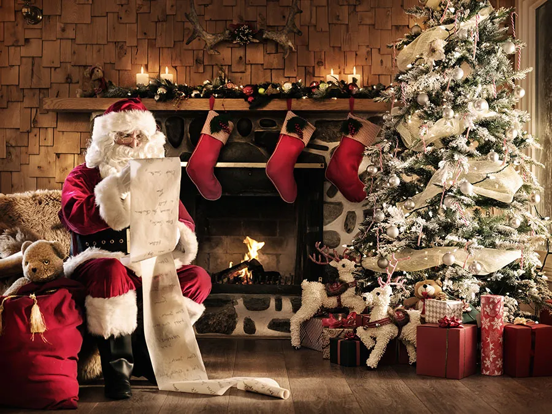

Christmas in the United Kingdom is a tapestry of traditions, customs, and festive cheer that have been passed down through generations. From the twinkling Christmas lights to the hearty Christmas dinner, these traditions bring families and friends together, creating warm memories that last a lifetime. We will go through both traditions and key dates in the Christmas Story in the UK, and a nice video to sum it all up. There is also a list of special, localised Christmas messages used around the country. Click the messages last, as the rest of the infomation will aide you in understanding them Click the relavant button below to get started:
